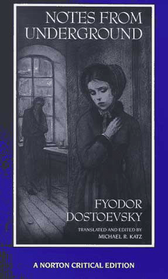

Dostoevsky's Notes from the Underground
Dostoevsky's
Notes from Underground

A Study guide by
Jen Marder, Mike Meyer, and Fred Wyshak
Arguably one of the greatest novelists in history,
Fyodor Dostoevsky is especially notable for interweaving deep philosophical,
psychological and theological threads into his brilliant fiction. As a result,
his works become much more than stimulating, entertaining stories but actual
representation of 19th century intellectual history. This can not be any
more true for his most philosophical work of all, Notes from Underground.
Notes is Dostoevsky's groundbreaking philosophical prologue to his later
novels, and it wrestles with modern existential questions which deal with
Man's role in a world where the idea of God was being rejected more and
more.
The Enlightenment of the 17th and 18th centuries espoused the value of reason,
proclaimed the potential improvement of Man and Society, and freed humanity
from superstition. By the 19th century, with the belief in God declining,
Dostoevsky saw mankind having lost its moral bearing, wafting directionless
in the tempest that is life. Instead of liberating Man for the better, the
Enlightenment had renounced his spiritual connection. Where Dostoevsky saw
a creature of God, his contemporary philosophers were seeking a new definition
of modern man, out from under the definition of God.
Notes provides a greater perspective in European thought. The 19th
century was the characterized by a brutal polarization of existential thinking
in which there was no synthesis. Dostoevsky and Friedrich Nietzsche epitomize
this philosophical schism: at one end, Dostoevsky calls for Man to embrace
faith and Christian morality; at the other stands Nietzsche, rejecting religion
as unnatural and entreating Man to transgress contemporary moral values.
By the turn of the century, Man and God were still as much a mystery as
before, and so remain.
In Notes, Dostoevsky shows us the Underground Man, a despicable and
pitiable creature who betrays himself and is not even aware of it. He is
the creation of a thoroughly anti-modern author imploring his fellow Russians
to resign from the West.
For the philosophical background of Western thought in the 19th century, visit this site:
For the electronic text, click here
Background
Notes from Underground
was first published in January and February of 1864 as the featured presentation
in the first two issues of The Epoch, Dostoevsky's second journal
of the 1860's. His first journal, Time, had recently failed, his
new journal was threatened with failure, his wife was dying, his financial
position was becoming evermore difficult and embarrassing, his conservatism
was eroding his popularity with the liberal majority of the reading public,
and he was increasingly the subject of attack by the liberal and radical
press. On March 20, 1864, Dostoevsky wrote to his brother Mikhail: "I
sat down to work on my novel. I want to get it off my back as soon as possible,
but I still want to do it as well as possible. It has been harder to write
than I thought it would be. Still it is absolutely necessary that it be
good: I personally want it to be good. The tone now seems too strange, sharp
and wild; perhaps it will not right itself; if not, the poetry will have
to soften it and carry it off."
Many aspects of Notes from Underground, - and especially, as Dostoevsky
himself noticed, the tone - seem strange, sharp and even bitter. To some
extent, the bitterness of the novel is traceable to the many personal misfortunes
Dostoevsky suffered while the novel was being written. Much more important,
however, was the influence of his maturing world-view with its ever colder
and more distant attitude toward the European liberalism, materialism and
utopianism of his younger years. Dostoevsky had begun his writing career
in the 1840's as a romantic idealist, even as a dreamer. At that time he
had devoted a great deal of attention to utopian socialism and its vision
of a perfectly satisfying, perfectly regulated life for humankind. This
perfection of life was thought to be achievable solely through the application
of the principles of reason and enlightened self-interest. In fact, it was
maintained that given the dominance of the rational and the spread of enlightenment,
perfection of life must necessarily follow.
While Dostoevsky was in prison and exile, these ideas of utopian socialism
were becoming stronger in Russia. They passed from the dreams of the 1840s
to the basic revolutionary program of the late 1850's and 1860s. Dostoevsky
however, had concluded from his observations while in exile, that there
was more to man than reason and enlightenment. He became convinced that
men were capable of the irrational as well as the rational, and that, in
fact, the irrational was in many ways man's essential element and the rational
was often only a flimsy construction built upon it. More than any of his
other fictional works, Notes from Underground clearly expresses this
conclusion about the essential composition of the human mind.
In addition to expressing Dostoevsky's debate with the liberals and radicals
of his time, Notes from Underground can also be seen as a specific
and direct polemic with one of the most famous revolutionary novels of the
1860's, N.G. Chernyshevsky's What is to be Done? Chernyshevsky was
the leader of the radicalist movement in Russia. In 1862 he was arrested,
and during solitary confinement lasting 678 days he wrote What is to
be Done?, which became his most famous work. This book has the general
appearance of a novel but is really more a handbook of radicalism. The tenuous
plot serves primarily to link one monologue of conversation on a point of
radical policy with the next. The "revolutionary youth" of the
time used What is to be Done? as a guide to behavior and ideology
for the next twenty years. Rakhemtov, the hero of the novel, became the
prototype of hard-headed materialism and pragmatism, of total dissatisfaction
with the government, and of the self-sacrificing nobility of spirit that
was the ideal of many of the radical intelligentsia.
Critical Responses to Notes from the Underground
In general, many critics have taken Notes as an ideological document
rather than as a novel. Thus, criticism has been radically divided: on one
hand, warm praise for the novel from admirers of Dostoevsky's views on personality
and ideology, and on the other, denunciation from the liberal, optimistic,
common-sensical and rationalist camp. This division in critical thought
existed from the very beginning. M.E. Saltykov-Schedrin(1826-1899), a journalist
and novelist of liberal and sometimes radical political slant, was one of
the first to attack Notes from Underground. His review, which appeared
in the Contemporary in May of 1864, was a sharply satirical attack,
focused especially upon the portrayal of the main character; he dismissed
him as the product of a troubled mind, and as irrelevant to the human condition
in general. At the same time, Apollon Grigorev (1822-1864), the most influential
critic among Dostoevsky's friends and supporters, published a review in
which he greatly praised the novel. First, he said, Notes offers
an extremely perceptive and profound view of man. Second, the novel deserves
praise for its high crafted construction (especially the relation between
the two parts) and for its beautiful style. As had happened so often before,
the opinion of the liberal critics prevailed. Dostoevsky's portrayal of
the structure of the human mind and of human motivation was new and surprising
to many people of his time. Most people found it hard to accept the idea
that the Underground Man was in any way related to them. As a result, it
was easy for them to dismiss the entire work as a fantasy or, at best, as
an interesting study of a disturbed mind. This was so often the fate of
Dostoevsky's works. Even today, the name of people who regard the novel
in this way is legion. In the Soviet Union, Notes from Underground
was usually regarded as the darkest blot, with the possible exception of
The Possessed, on Dostoevsky's record as an author. In the West,
too, one often meets this view, though at present, very rarely in print.
Yet one suspects the attitude is there, slumbering until fashions in criticism
again allow it to appear.
For N.K. Mikhaylovksy (1842-1904) Notes from Underground was the
prime example of that "menagerie of beasts and prey" of which
he maintained Dostoevsky was the cruel and heartless trainer. Further, in
his essay "A Cruel Talent," Mikhaylovsky wrote: Dostoevsky purposely
teases his animals, shows them a sheep or a piece of bloody meat, beats
them with a whip or a red hot iron, in order to observe one detail or another
of their anger and cruelty û to look for himself and, of course, to
show it to the public. Of "that section of the menagerie which is called
Notes from Underground" Mikhaylovsky wrote that "the hero
tortures because he want to, he likes torture. There is neither reason nor
purpose here, and, in the opinion of Dostoevsky, they are not at all necessary,
for absolute cruelty and fur sich is interesting."
V.V.Rozanov (1856-1919) approached Dostoevsky's work as a student of philisophical
and religious thought. He had already rejected positivism, materialism and
rationalism,a nd the approach to Dostoevsky advocated by rationalists like
Mikhaylovskya nd Dobrolyubov. Rozanov found in Dostoevsky a spiritual teacher
and leader and valued him as a great prophet. he was one of the first to
point out that, in many ways, Notes from Underground was the intellectual
key to understanding the novels that followed it. To him Notes was a sort
of textbook to the mature works of Dostoevsky. According to Rozanov, Notes
concerned itself with the following major points: 1) criticism of the idea
that it is possible for humankind, by means of reason, to create a perfect
society and to abolish suffering. 2) the idea that human imperfection is
a law of nature and the cause of human suffering; by this reasoning suffering
is, if not justified, at least made acceptable. 3) the idea that humans
are essentially irrational and incomprehensible beings, capable of the most
noble and at the same time the most base actions.
Notes from Underground has met with far greater success in the West
than in Russia. Unlike Soviet scholars, Western critics do not compile lengthy
lists of personal calamities to account for the tone and ideas of the novel.
They have, in general, worked from the notion that Dostoevsky wrote Notes
from Underground as he did, not because his wife was dying, his epilepsy
was worsening, or his financial position was bad, but simply because the
way he did it was the way he wanted to do it. Notes from Underground
is assigned a most prominent place among within Dostoevsky's works by existentialist
critics. Jean-Paul Sartre especially, has found in the Underground Man a
forerunner and spokesperson for existential philosophy. To Sartre, the book
and the character are especially important in the clear acknowledgment they
make of man's essentially irrational nature.
Perhaps the most balanced work on Notes is the section devoted to
it in Edward Wasiolek's book, Dostoevsky: The Major Fiction. Wasiolek
works with the novel, mainly from the philisophical rather than aesthetic
viewpoint. He understands its value in much the same way as Rozanov did,
as a key to understanding the longer novels. Wasiolek outlines the major
themes touched upon by Dostoevsky through the Underground Man as: 1) attack
on rationalism, 2) attack on social utopianism and materialism, 3) the vision
of man as a being who is capable of the most incredible generosity and nobility
and, at the same time, also of the greatest baseness, 4) the portrayal of
man's motives as stemming ultimately from man's slavish desire to gratify
his own self-will. Furthermore, Wasiolek points out the ambiguity of Dostoevsky's
portrayal of the Underground Man. In the novel the underground man is both
a thoroughly despicable and petty person and a "hero," a typical
man. Dostoevsky's ambiguous relation to the underground man is typical of
his apparent relation to the strong - willed heroes of his later novels
- Raskolnikov, Stavrogin and Ivan Karamazov.
Critical Analyses and Reading Guides
http://www1.um.edu/lol-russ/hpgary/Russ3421/lesson8.htm
http://www.wsu.edu:8080/~brians/hum_303/underground.html
http://www.geocities.com/Athens/Acropolis/6250/underg.htm
Symbolism
One way to read Notes from Underground is to read it as a political statement by Dostoevsky. It is a reactionary work to Nikolai Chernyshevsky's novel What is to be done?. Chernyshevksy was an atheist, a socialist, and a feminist. The book, written in 1863, has a tone of utilitariansim and utopianism. In it Chernyshevsky developed Vara Pvalovna's 4th dream in which she saw the Crystal Palace at Sydenham. She marveled at the graceful architecture. The people in it were singing a song that contained a verse, "live like kings." She couldn't stop exclaiming how elegant it was. Dostoevsky hated this book because of all the progressive ideas it contains. He wrote Notes in reaction to it. What is to be done? appeals to rationalism, reason, Darwinism, and all the modern ideas which Dostoevsky vehemently hated. In Notes, Dostoevsky included many symbols to show that rationalism and science were not acceptable for mankind to live by. For example, the anthill, mathematical tables, a piano key, and evolutionism. For the anthill, imagine all the ants working to build their anthill. There is no individuality when all the ants are working towards a common objective. To Dostoevksy the mathematical tables represented something you can pull down and get an answer to any question you want about the human condition. Dostoevsky feared someday we would have the entire human existence mapped out. He was against the explanation of human behavior in a scientific fashion. The piano key represented a deterministic feature beginning to show up in society that Dostoevsky did not like. Finally, from monkey to man, this idea was most contemptible of all, give Dostoevsky's religious background. However, the greatest example of science and modernity that Dostoevsky presents to the reader is the Crystal Palace. The Crystal Palace was a structure built in 1851 in London. It was the first modern building. It was made entirely out of glass and iron. This palace was supposed to be as good as it gets. It was utopianism brought out into real life. To Dostoevsky it represented reason, science and logic. Humans were submitting to organized living. It was a glass building, there was no privacy. Since there was no privacy, and many people worked together towards a common goal, there was little individualism.
History of the Crystal Palace
The splendid "Crystal Palace," which housed the Great Exhibition of 1851 in Hyde Park in the center of London, was one of the most remarkable constructions of entertainment in London. the other being Alexandra Palace built in 1873. After the 1851 exhibition, the entire building was dismantled and moved to a new permanent site on parkland at Sydenham in the south London suburbs. The area became known as Crystal Palace. The destruction of the building by fire in 1936 left a void in the park which has never been filled.
For pictures of the interior and exterior of this amazing building, go to:
http://soa.syr.edu/faculty/bcoleman/ARC523/lectures/523.Crystal.Palace.images.html